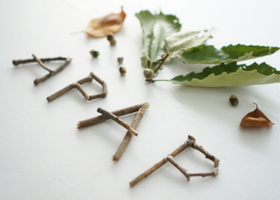
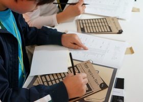

하이라이트

가을 숲 체험과 함께하는 APAP투어
[10, 11월 시즈널(seasonal)프로그램] 안양예술공원의 삼성산 곳곳의 가을 정취, 동식물, 곤충들과 함께하는 자연미술 프로그램을 접목함으로써 예술과 자연이 조화를 이루는 APAP투어를 만나실 수 있습니다.
두 번 읽는 책: 11월
매달 공원도서관 사서가 추천하는 도서들을 만나보세요. 이번에는 책을 예술작품으로 만들어내는 사람들의 이야기를 담고 있습니다. 책을 구기고, 잘라내고, 색칠하는 다양한 작업들과 출판에 관한 책의 여러 모습을 살펴보세요.

청소년 교육프로그램: 헬로! 아카이브
안양파빌리온 교육프로그램 예술관련 도서와 자료를 분류, 수집, 기록하는 체험활동을 통해 일상을 기록하는 방법을 습득하여 ‘나만의 예술 자료집’ 만들기를 시작해 봅시다.
-
공공예술 해설사 전문교육 안내 안양파빌리온
12/08 - 12/15
공공예술 해설사 전문교육
2014. 12. 8(월) ~ 12. 15(월) / 총 4회 / 안양파빌리온
-
두 번 읽는 책: 11월
11/01 - 11/30
매달 공원도서관 사서가 추천하는 도서들을 만나보세요. 11월의 두번읽는 책은 책을 예술작품으로 만드는 사람들의 이야기를 소개해드립니다.
-
헬로! 아카이브 안양파빌리온
10/11 - 11/29
서가 및 아카이브 자료를 활용하여 청소년들을 대상으로 아카이브 교육프로그램 실시합니다. 체험활동을 통해 일상을 기록하는 방법을 습득하여 ‘나만의 예술 자료집’ 만들기를 시작해 봅시다.
-
가을 숲 체험과 함께하는 APAP투어 안양파빌리온
10/01 - 11/30
전문도슨트의 해설과 함께 가을을 즐길 수 있는 예술작품 관람 프로그램입니다.
4회 안양공공예술프로젝트: 퍼블릭 스토리
안양공공예술프로젝트(APAP)는 도시에 대한 이해와 감각을 다시 상상하기를 제안하는 안양문화예술재단 주최의 공공예술 행사입니다. 2013년과 2014년에 걸쳐 진행되는 4회 안양공공예술프로젝트: 퍼블릭 스토리는 '모두를 향한 지식' '각자를 위한 이야기' '서로를 통한 듣기'라는 슬로건 하에, 지난 APAP를 되돌아보기를 제안합니다. 이번 APAP는 동시대를 살아가는 사람들의 마음과 생각을 무대로 삼아, 현대미술과 공공의 관계를 다채로운 이야기로 풀어냅니다.
4회 안양공공예술프로젝트
THE 4TH ANYANG PUBLIC ART PROJECT
경기도 안양시 만안구 예술공원로 180
 info@apap.or.kr
info@apap.or.kr
 031–687–0548
031–687–0548
 Copyright 2013
Copyright 2013